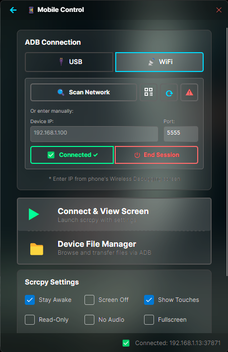

Cordex
A modern, high-performance Windows desktop application built with .NET 10 and WPF. Powered by a Chromium engine via CefSharp, Cordex delivers a fast, fluid, and native-feeling experience on Windows 10 and 11. Self-contained — no runtime installation required.
